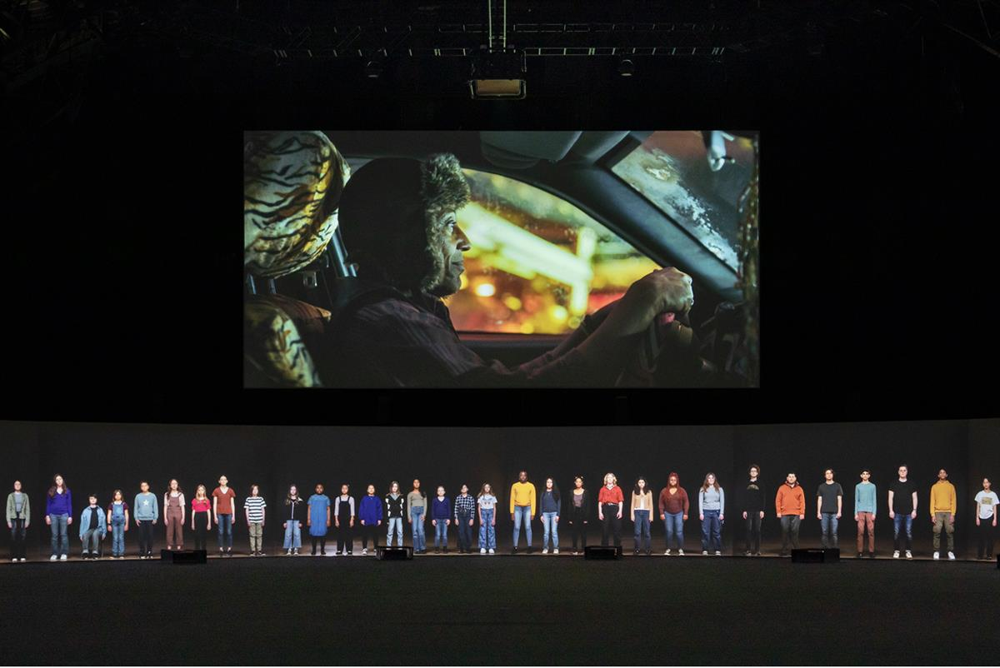
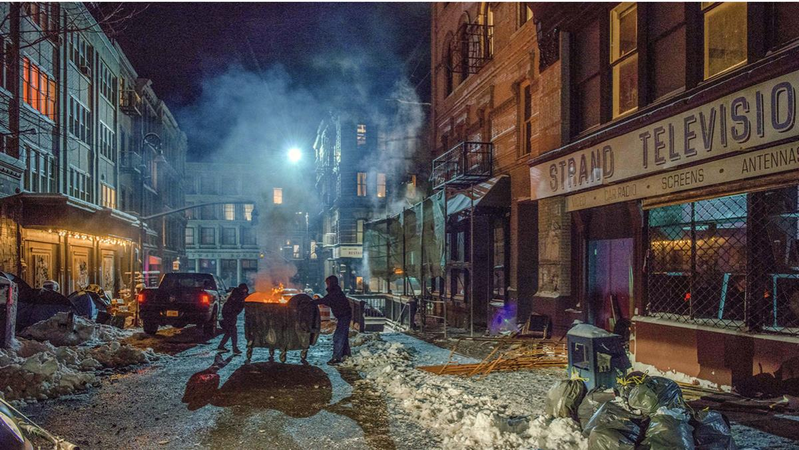
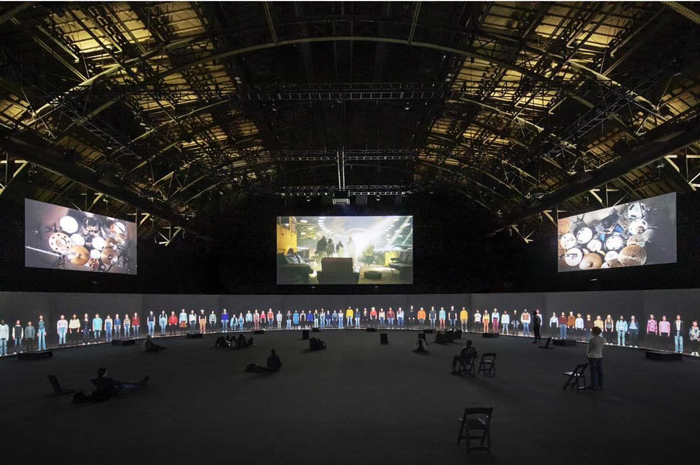

Film still from Euphoria, 2022. © Julian Rosefeldt
ARTNET NEWS- On View
German Artist Julian Rosefeldt’s New Film Weaves 2,000 Years’ Worth of Cultural History Into a Commentary on Capitalist Greed
Currently on view at Park Avenue Armory, the work is a 24-channel installation that also features the Brooklyn Youth Chorus.
Katy Diamond Hamer, January 3, 2023
Park Avenue Armory has housed many masterpieces and Euphoria (not related to the drug-fueled HBO hit) is one of them. The feature-length film by artist Julian Rosefeldt, which opened November 2022, is a cinematic feat confronting global consumerism, class, privilege, and the failures of contemporary society.
The work encompasses five theatrical vignettes, the first featuring actor Giancarlo Esposito (who many will recognize from Breaking Bad) as a cabdriver waxing poetic to a mostly non-responsive passenger on their way to the Brooklyn Navy Yard. While the scenes that follow feel very “New York,” they also encapsulate a world that merges parts of the city with fantasy in the vein of Terry Gilliam’s 12 Monkeys.

Julian Rosefeldt’s Euphoria at Park Avenue Armory, 2022. Photo: Nicholas Knight. Courtesy of Park Avenue Armory.
Shown on 24 screens in the round, the installation has three components: the feature film, a 360-degree perspective of the Brooklyn Youth Chorus shown to scale and in “real time,” and five additional screens, each containing a drummer. The drummers accompany the Brooklyn Youth Chorus whose voices fill the hall in harmony with music composed by Samy Moussa. The result is as jarring as it is soothing.
Looping throughout the duration of the exhibition, Euphoria is a commentary on the institution and neighborhood where it is housed, not stated but implied as the topic of wealth and class run throughout. The film is an enigma of sorts, a high-budget tour de forceutilizing Shakespearean-style soliloquies and didactics. At one point, as Esposito’s passenger (also played by Esposito himself) walks away from the cab, he murmurs, “Remember: We are but dust and shadow,” quoting Roman poet Horace.

Film still from Euphoria, 2022. © Julian Rosefeldt.
Rosefeldt is the mastermind behind the screenplay, but is quick to not take credit.
“The credit for the writing doesn’t go to me, but to the more than 100 writers that contributed texts which were assembled into the text collages in Euphoria,” he said. “Creating a project on a topic as general as greed or capitalism is obviously ambitious, if not presumptuous, and the sheer amount of sources to be considered and books to be read was a bottomless pit.”
The chosen texts come from such notables as Ayn Rand, Plato, Aldous Huxley, Jean-Paul Sartre, Barack Obama, the Rolling Stones (from the band’s “You Can’t Always Get What You Want”), and even Snoop Dogg (from “Gin and Juice”). All of these texts are expertly woven together in correlation with cinematography to create something entirely new.
The result is uncanny, as certain phrases are recognizable but completely removed from any familiar context. Rosefeldt works within his own container, inventing a world untethered to time or self-consciousness.

Julian Rosefeldt’s Euphoria at Park Avenue Armory, 2022. Photo: Nicholas Knight. Courtesy of Park Avenue Armory
“What helped structuring the text fragments once they were selected was that they needed to be speakable and performable in a convincing manner following a stream-of-thought,” added Rosefeldt, “which makes the viewer forget that these texts originate in various epochs within 2,000 years of cultural history.”
Euphoria echoes the desperation felt by Willy Loman from Arthur Miller’s Death of a Salesman, the seamless visual weaving of The Clock (2010) by Christian Marclay, and a series of live performances at Matthew Barney’s studio several years ago.
Rosefeldt made a splash in 2015 when his video installation, Manifesto, starring Cate Blanchett, was screened at Park Avenue Armory (it has since been adapted into a feature film). On the two works, he added, “Comparable to the characters in Manifesto, the actors in Euphoria are more like vessels for universal ideas than real-shaped characters.”
Euphoria is on view at Park Avenue Armory through January 8, 2023.
SOURCE: ARTNET NEWS